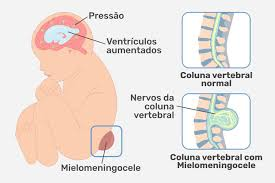

¿Qué es el mielomeningocele?
El mielomeningocele es un defecto de nacimiento en el que la columna vertebral y el conducto raquídeo no se cierran antes del nacimiento.
La afección es un tipo de defecto del tubo neural.
Causa
Durante el primer mes de embarazo, los dos lados de la columna vertebral del bebé (o espina dorsal) normalmente se unen para cubrir la médula espinal, los nervios raquídeos y las meninges (los tejidos que cubren la médula espinal). El cerebro y la columna vertebral en desarrollo se llaman el tubo neural en este punto. El término "DTN" se refiere a cualquier defecto de nacimiento en el cual el tubo neural en la zona de la columna no se cierra completamente.
El mielomeningocele es un DTN en el cual los huesos de la columna no se forman totalmente. Esto provoca un conducto raquídeo incompleto. La médula espinal y las meninges sobresalen de la espalda del niño. Esta afección puede afectar hasta 1 de cada 4,000 bebés.
Otros tipos de Defectos del tubo neural incluyen:
- Espina bífida oculta, una afección en la cual los huesos de la columna no se cierran. La médula espinal y las meninges permanecen en su lugar y la piel generalmente cubre el defecto.
- Meningocele, una afección en donde las meninges sobresalen por el defecto de la columna. La médula espinal permanece en su lugar.
- Encefalocele, una afección en la que las meninges e incluso el cerebro pueden sobresalir del cráneo.
Un niño con mielomeningocele también puede tener otros trastornos o defectos de nacimiento. Ocho de cada diez niños con mielomeningocele tienen hidrocefalia o una acumulación anormal de líquido cefalorraquídeo en los ventrículos del cerebro.
Con el mielomeningocele también pueden encontrarse otros trastornos de la médula espinal o del sistema musculoesquelético, incluyendo:
- Siringomielia (un quiste lleno de líquido dentro de la médula espinal)
- Dislocación de la cadera
Se desconoce la causa de DTN. Sin embargo, parece que los bajos niveles de ácido fólico en el organismo de una mujer antes y durante el comienzo del embarazo juegan un papel en este tipo de defecto congénito. El ácido fólico (o folato) es importante para el desarrollo del cerebro y la médula espinal.
Si un niño nace con mielomeningocele, los futuros niños de esa familia corren un riesgo más alto que el resto de la población general. Sin embargo, en muchos casos, no hay conexión con la familia. Factores como la diabetes, obesidad y el uso de medicamentos anticonvulsivos y otros medicamentos que se sabe que reducen los niveles de ácido fólico en la madre también pueden incrementar el riesgo de desarrollar de este defecto.
Sintomas
Un recién nacido con este trastorno puede presentar una zona abierta o un saco lleno de líquido en la mitad de la espalda o en la parte baja de la espalda.
Los síntomas pueden incluir:
- Pérdida del control de esfínteres
- Falta de sensibilidad parcial o total
- Parálisis total o parcial de las piernas
- Debilidad en las caderas, las piernas o los pies de un recién nacido
- Pies o piernas anormales, como pie zambo
- Acumulación de líquido dentro del cráneo (hidrocefalia)
Prevencion
Los suplementos de ácido fólico pueden ayudar a reducir el riesgo de las anomalías del tubo neural, como el mielomeningocele. Es recomendable que cualquier mujer que esté pensando en quedar embarazada tome 0.4 mg de ácido fólico al día. Las mujeres embarazadas en alto riesgo necesitan una dosis más alta.
Es importante recordar que las deficiencias de ácido fólico se deben corregir antes de embarazarse puesto que los defectos se desarrollan muy temprano.
Las mujeres que planean quedar en embarazo pueden ser examinadas para determinar la cantidad de ácido fólico en su sangre.